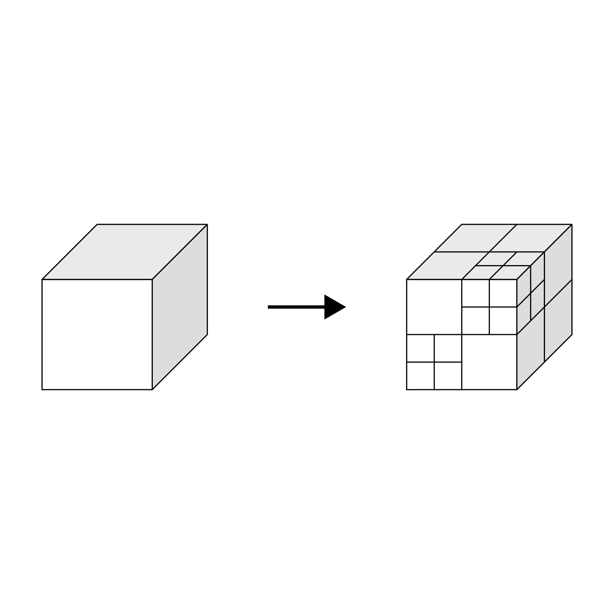
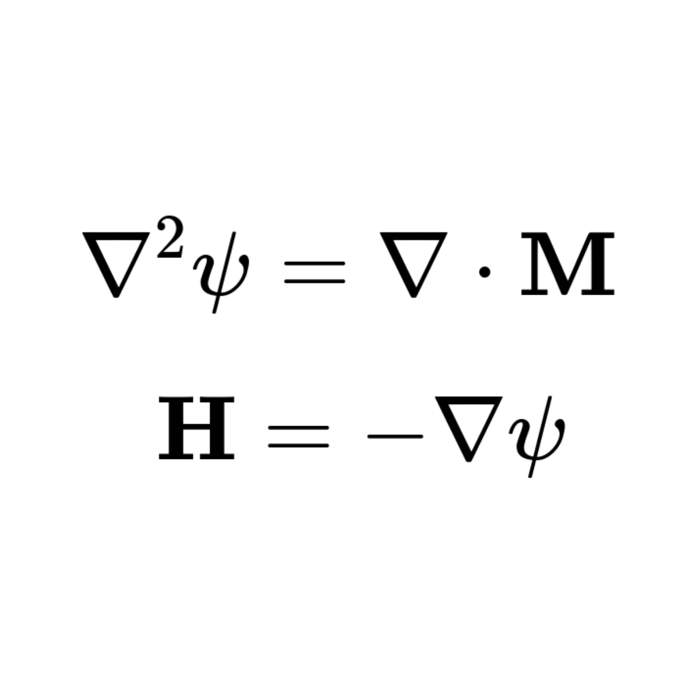

Boundary element method
Unlike traditional finite element methods, Traceon only needs the boundary mesh to compute the fields. This greatly reduces
the problem size and improves accuracy.

Fast Multipole Method
Traceon employs the Fast Multipole Method to scale simulations to millions of triangles. A new and high performance
implementation of this algorithm has been developed.

Accurate and fast particle tracing
Traceon uses advanced mathematical formulas to make accurate approximations of the fields around the optical axis. Unique for the boundary element
method is that these approximations can be made analytically.

Magnetostatics
Thanks to the method of reduced potential, Traceon also allows magnetostatic fields to be computed. Also modules which combine electrostatic and magnetostatic
elements are fully supported.
Convenient Python interface
Traceon is distributed as a package for the programming language you know and love: Python. This familiar programming language
allows complete automation of every workflow.

Parametric mesher
Traceon comes with a parametric meshes which produces highly structured meshes. In this manner geometric symmetries are
easily reproduced in your mesh. Importing standard mesh formats is also supported.